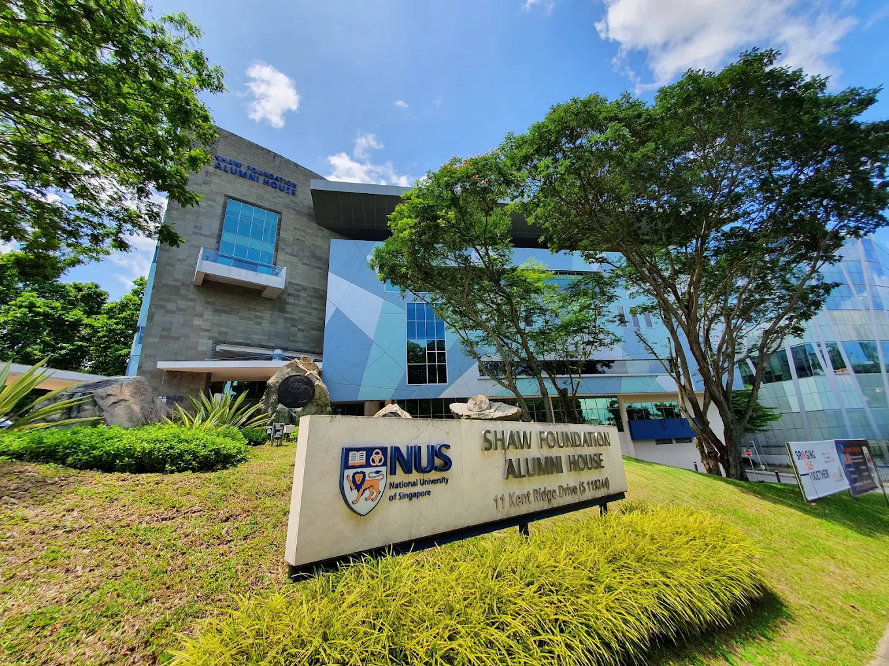
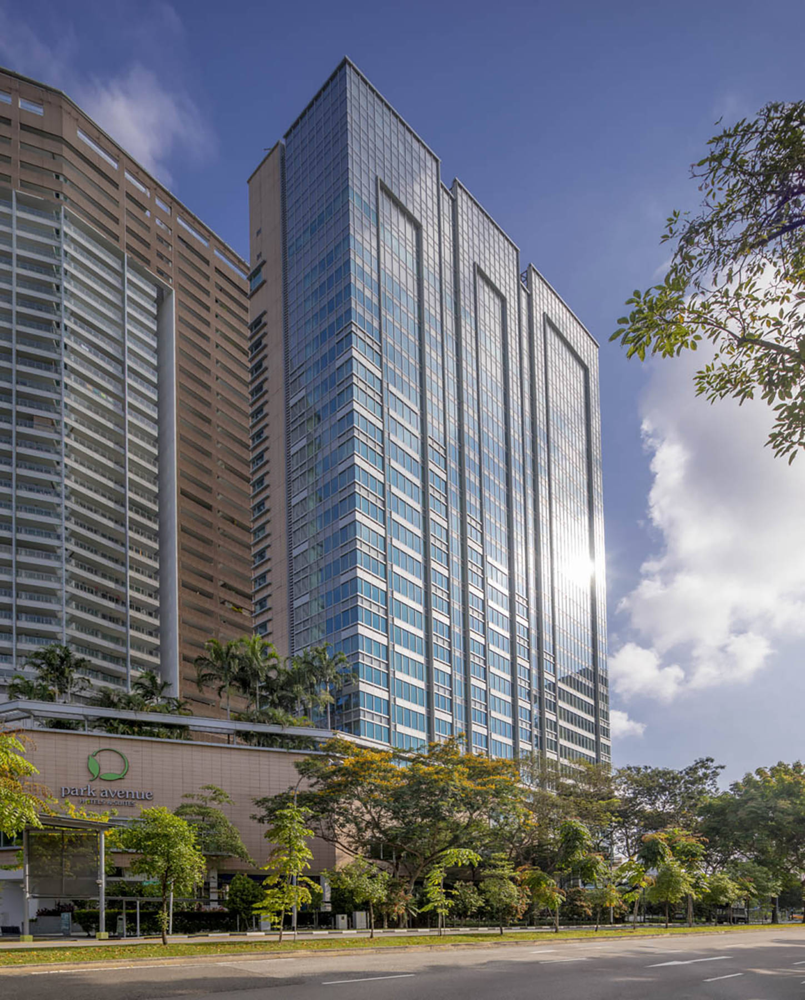
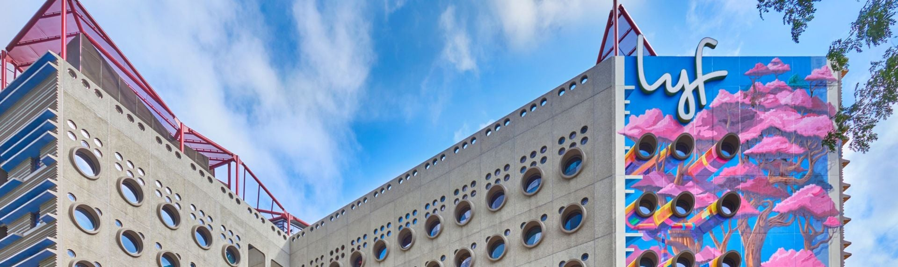
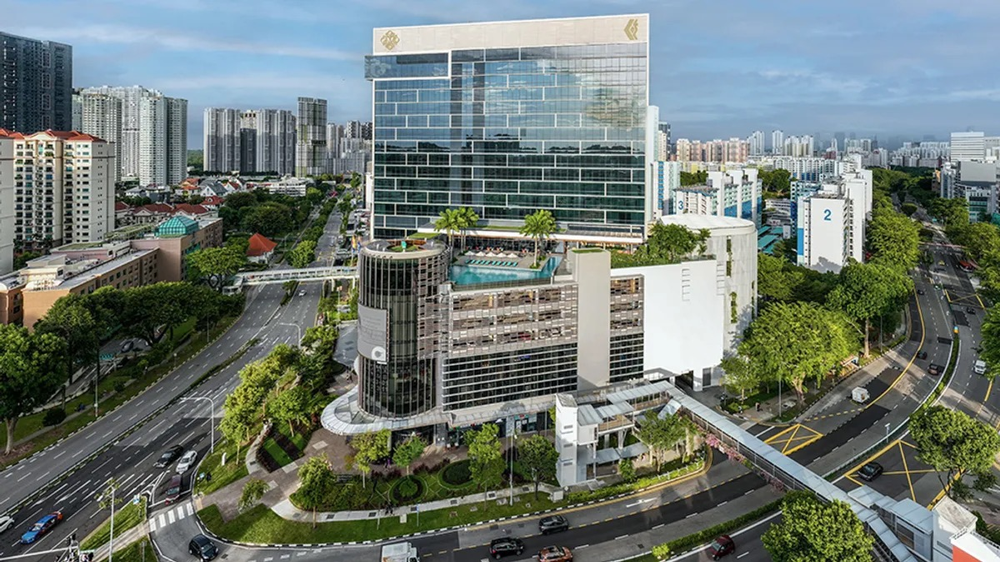
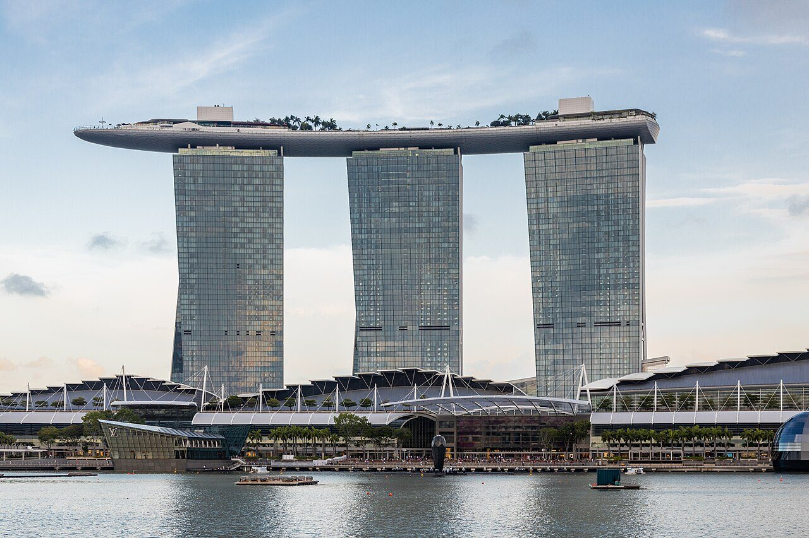
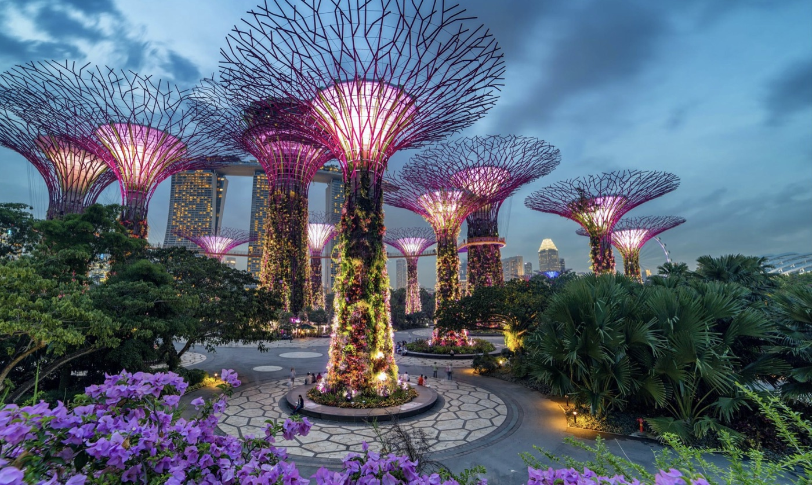
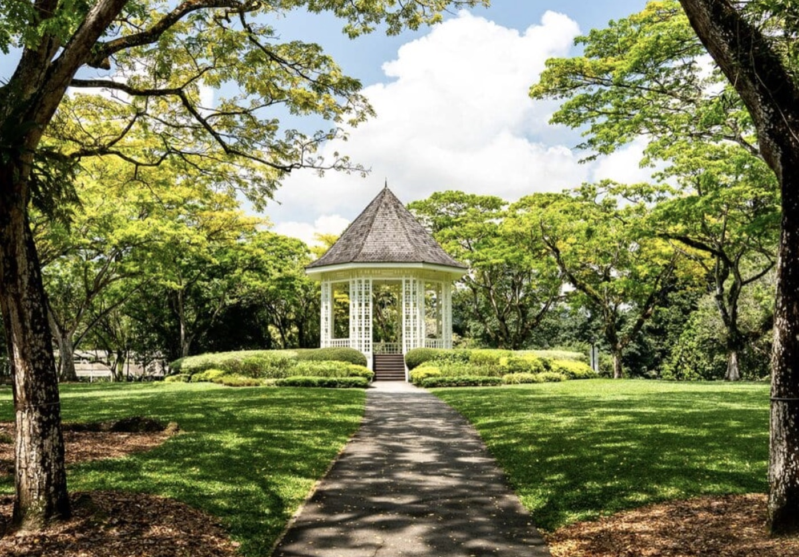
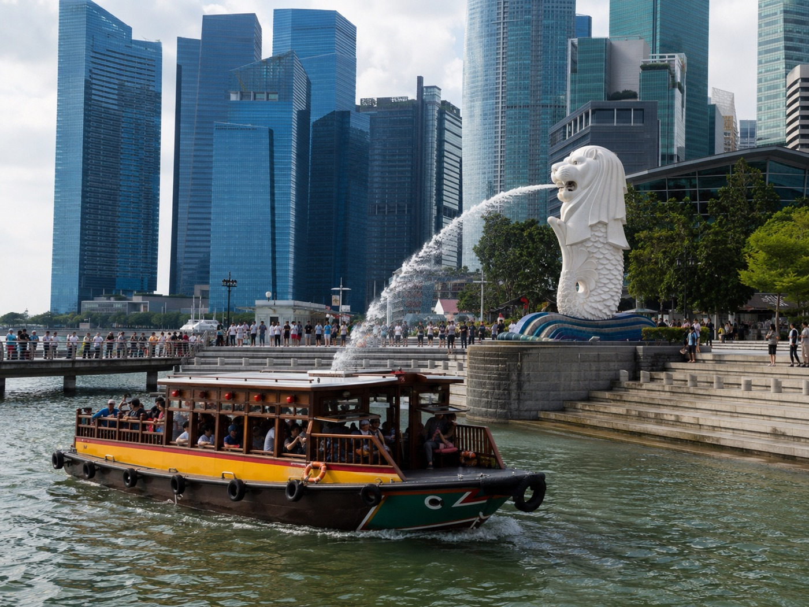

Find Shaw Foundation Alumni House
Use the full street address when planning a taxi, private-hire trip, or campus transfer. SFAH is also a short walk from the AS5 campus shuttle stop.
Changi AirportSingapore cityNUS Kent RidgeSFAH
Plan your arrival, campus transport, accommodation, and time beyond the scientific programme.
ISMPC2027 will be hosted at Shaw Foundation Alumni House (SFAH), a dedicated event venue on the National University of Singapore's Kent Ridge campus.
The scientific programme will be centred on two principal spaces within SFAH: the Auditorium and the Lavender Seminar Room. Detailed room assignments will be published with the final programme.

Use the full street address when planning a taxi, private-hire trip, or campus transfer. SFAH is also a short walk from the AS5 campus shuttle stop.

The Ridge is the preferred accommodation for eligible ISMPC2027 delegates. This dedicated NUS guest property is on campus and will also host the conference welcome reception.
Delegates who wish to stay at The Ridge should select this option during registration. The organizing team will consolidate eligible requests as a group booking and send the applicable reservation link and instructions once arrangements are confirmed.
The Ridge is located at 17 Computing Drive on the NUS Kent Ridge campus. Use the full address when planning a taxi, private-hire, or campus transfer.

Near Buona Vista MRT and the one-north district, with onward public transport to NUS.
Official website
A serviced residence near one-north MRT, suitable for delegates who prefer a flexible stay.
Official website
A full-service hotel south of campus with taxi and public-bus connections to NUS.
Official websiteThe organizers do not control rates or availability at alternative hotels. Please verify current terms directly with each property before booking.
The simplest option with luggage. Enter the full destination rather than only “NUS”:
Kent Ridge MRT (Circle Line) is the main rail gateway to the campus. Continue by NUS Internal Shuttle Bus, public bus, taxi, or private hire.
From Kent Ridge MRT, NUS shuttles connect to stops within walking distance of The Ridge.
Changi Airport is connected to the city by MRT, taxi, and private-hire services. Public transport is economical but requires transfers for NUS.
Entry requirements depend on nationality and travel document. Confirm the latest requirements with Singapore's Immigration & Checkpoints Authority.
ICA visa informationEligible travellers must submit the SG Arrival Card within the official submission window before arrival. It is not a visa.
Official SG Arrival CardCheck passport validity, entry conditions, and health or customs requirements close to departure because rules can change.
Entering Singapore
Waterfront architecture, museums, and evening skyline views in the city centre.

Conservatories, Supertrees, and waterfront gardens beside Marina Bay.

A UNESCO World Heritage Site with tropical landscapes and the National Orchid Garden.
Social event
Two evening experiences are under consideration. The selected format, date, availability, and participation arrangements will be announced separately.

Singapore River & Marina Bay cruise
An evening journey through the historic Singapore River and Marina Bay waterfront, offering an informal setting for conversation and city views.
Singapore River CruiseNight Safari Singapore
An after-dark wildlife experience at Mandai, combining nocturnal animal habitats, walking trails, and the Safari Adventure Tram.
Night Safari